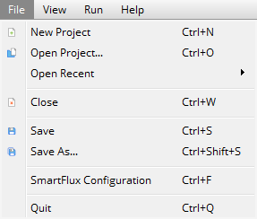
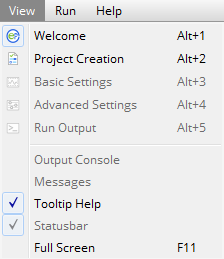
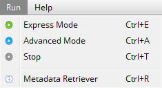
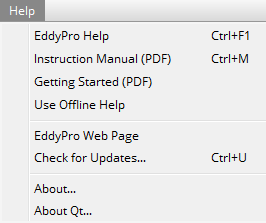

EddyPro® 7 Software
Overview of the interface
This section provides a high-level overview of the EddyPro interface. It should help you become familiar with the menus, toolbars, and the settings that are available on each page of EddyPro.
Welcome page
Upon entering the application, you will see the welcome page, which includes options to start a new project or open an existing project, and the customary menus and toolbars. These include:
{kind=link}
Menus
In the top left of the EddyPro window, you will see four menus.
The File menu provides options to create a New Project, Open Project..., Open Recent projects, Close the current project, Save the current project, or Save As… to save a copy with a new file name.

The View menu provides navigation between the Project Creation page, Basic Settings page, Advanced Settings page, and Output Console. You can also toggle EddyPro Tooltips and EddyPro messages. Some of these options are only available after you have entered the software suite.

Under the Run menu you can choose to run a project as Advanced or Express, or to Pause/Stop a run. It also includes the Metadata Retriever run option. These options are available after the project has been started.

Under the Help menu you can access the online or offline help content, view video tutorials, check for software updates, view information about the application, and view information about the Qt development environment. If you are not online, select Use Offline Help to access a version of the help resources that are installed with the EddyPro application.

Toolbars
The File Toolbar includes many of the same options available under the File Menu (New Project, Open Project, Save, Save As.., and Close).
{kind=link}
The Navigation Toolbar has five buttons.These are used to navigate between pages in the software.
{kind=link}
The Run Toolbar provides the buttons that initiate data processing. The run buttons activate after EddyPro has enough information to complete the project. Express Mode uses predefined default settings to process the project. Advanced Mode uses whichever settings you apply in the software interface.
Stop will end a data processing session.
{kind=link}
The tool bars can be moved to the desired position on your computer display.
In this page: